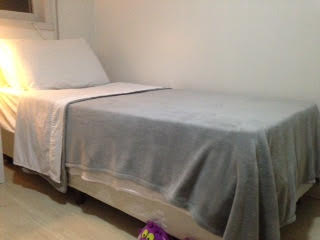
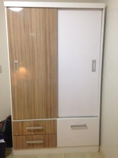
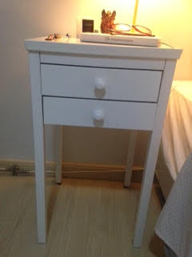
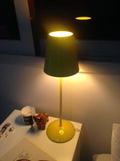
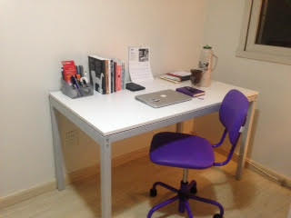
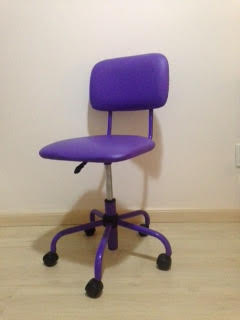

Olá!
Estou partindo de Brasil e tenho algumas coisas que gostaria vender. As coisas estao bem cuidadas e podemos negociar o preço se for necessário.
Contato
 Email pam.cdm@gmail.com
Email pam.cdm@gmail.com
 Telephone (+55)(51)99605233
Telephone (+55)(51)99605233
Cama boxTamanho solteiro, confortavel e bem cuidado. |
 |
RopeiroRopeiro de duas portas, de um lado tem para pindurarroupas, do outro lado tem pratileras. Na parte de baixo tem duas caixas para mais roupas e um espaço para zapatos. |
 |
Criado mudoMesa branca com dois caixas da marca tokstock |
 |
LampadaLampada de cor amarelo, disenho simples, versatil e facil de incorporar na decoração dos seus espaços. |
 |
Mesa ou escrivadinhaVENDIDO Mesa minimalista branca, altura de 75 cm, largura de 130 cm e profundidade de 75 cm. E uma mesa bem amplia para botar computador e todas as coisas que precisa ter contigo. Referencia da mesa no site da tokstok. Veja aquiTempo de uso: dois anos e meio Preço original: 765 BRL Preço do bazar: 350 BRL |
 |
CaderaCadera de cor roxa para escrivadinha, se tu gostas de roxo essa e tua oportunidade! |
 |
Ventilador de tetoEsse ventilador de teto salvo minha vida! ele e super potente, ele tem 3 velocidades,o disenho e bem simples e bonito.
Tempo de uso: 2 anos |
Curtiu das coisas mas também esta procurando onde morar?
Que coincidencia, tambem temos um lugar para tu dividir apartamento com uma porto alegrense muito querida, madura, responsavel e fácil de levar.
Como é o apartamento?
O apartamento tem dois cuartos, as areas comunes ja estão equipadas, tem sofa, mesa para comer, coisas para cozinhar, geladera, fogão e onde lavar roupa. Mas se tu tem coisas podemos conversar claro!
Onde fica?
O apartamento esta numa area bem ubicada no bairro Petropolis perto da avenida Protasio e praça Encol. Por perto tem supermercado Saffari da Protasio, supermercado Nacional da Nilo, parque Redenção a 10 minutos em onibus, na area tem academias, restaurantes, frutarias, cafes e padarias.
Como se transportar?
Fica perto da avenida Protasio onde passan varios onibuses. Se tu estudas ou trabalhas na PUCRS tem onibus da linha T9 que passa a uma cuadra do predio.
Se tu estas interesado pode me enviar um email e podemos agendar uma hora para te mostrar o apartamento.